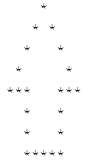
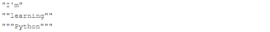

Code
print("Programming", "Essential", "in", sep='***',end='...')
print("Python", )Programming***Essential***in...Pythonprint()Мета: навчитися писати і запускати найпростіші програми на Python з використанням функції print()
Перед виконанням лабораторної роботи необхідно опрацювати матеріал Лекції 2.
У лабораторній роботі використано матеріали python institute.
print() Python.print()Розглянемо можливості функції print(), виконавши низку прикладів.
Programming***Essentials***in...Python
print("Programming", "Essential", "in", sep='***',end='...')
print("Python", )Programming***Essential***in...Python
print(" *")
print(" * *")
print(" * *")
print(" * *")
print("*** ***")
print(" * *")
print(" * *")
print(" *****") *
* *
* *
* *
*** ***
* *
* *
*****I'm student
print("I'm student")I'm studentprint(), а також символи нового рядка та esсape-символи, щоби відповідати очикуваному результату, виведеному у трьох рядках:
print("\"I'm\"\n\"\"learning\"\"\n\"\"\"Python\"\"\"")"I'm"
""learning""
"""Python"""number_decimal = 5 * 8**2 + 0 * 8**1 + 0 * 8**0
print(number_decimal)320number_decimal = 7 * 16**2 + 7 * 16**1 + 7 * 16**0
print(number_decimal)1911Виконати п. 1-6, наведені вище у цьому зошиті.
Створити файл lab_2_StudentLastName.py з написаним кодом.
Закомітити файл у локальний репозиторій.
Відправити (“запушити”) поточну версію Git-проєкта у віддалений репозиторій на GitHub.
Звіт має складатися з файлу (за основу взяти цей Python-зошит) lab_2_StudentLastName.ipynb.
print(3 ** (3 ** 4))443426488243037769948249630619149892803print()?print("Hello\nWorld!")Hello
World!